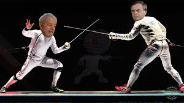

X1 dos cria
Publicado: 03/03/2024 bolsonaro faz o L
Fizemos essa viagem em Julho de 2023 onde passamos 06 dias incríveis, com experiência de uma nova cultura, culinária, paisagens visnumbrantes e principalmente muita neve!
Leia mais..bolsonaro faz o L
Fizemos essa viagem em Julho de 2023 onde passamos 06 dias incríveis, com experiência de uma nova cultura, culinária, paisagens visnumbrantes e principalmente muita neve!
Leia mais..No entanto, seu relacionamento enfrenta uma série de desafios. Eles são confrontados com a resistência de suas bases políticas e com a oposição da mídia, que vê esse romance como uma traição aos seus ideais. Além disso, os problemas não resolvidos de suas carreiras políticas continuam a assombrá-los, criando tensões adicionais. Apesar de tudo, Lula e Bolsonaro estão determinados a seguir seus corações. Eles percebem que, ao se unirem, podem enviar uma mensagem poderosa de reconciliação e cooperação para o Brasil e para o mundo. Assim, eles enfrentam os desafios juntos, navegando pelas águas turbulentas do amor e da política, na esperança de construir um futuro melhor para todos os brasileiros.
Todo esse ecossistema está ameaçado, é preciso unir forças, dar voz aos indígenas, aos povos tradicionais da floresta! Defender a Amazônia é defender a vida!
Leia mais..Os ataques ou atentados terroristas de 11 de setembro de 2001 foram uma série de ataques suicidas contra os Estados Unidos coordenados pela organização fundamentalista islâmica Al-Qaeda em 11 de setembro de 2001. Na manhã daquele dia, dezenove terroristas sequestraram quatro aviões comerciais de passageiros.
Leia mais..Esfregue um pano seco ou pouco úmido, sem fiapos, com movimentos em linha reta do centro para a borda do disco, tomando cuidado para não deixar marcas de dedo. É muito importante manter a linha reta na hora da limpeza, pois os movimentos circulares podem acabar prejudicando a leitura do disco.
Leia mais..